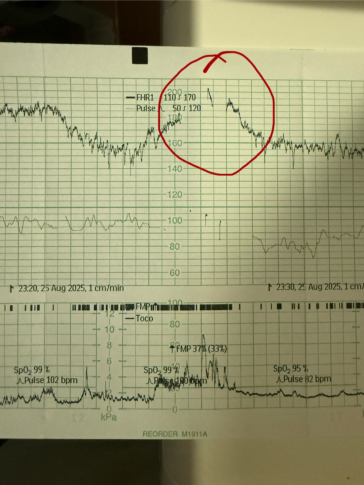

Asa's Birth: A Live Log
Will post an update at least every 30 minutes
Tuesday 26th August 2025
2:30
Contractions have reached most intense point. Epidural underway. Several attempts have been unsuccessful. Scan of back needed
01:15
Another examination revealed 3-4cm dilation. Failed to manually break waters again. Becky passed out due to overuse of gas and air. Midwives acknowledge active labour and will keep us here
00:30
Increasing intensity, pain, and sickness. Plan is still to go downstairs and get some hormones (despite seemingly entering active labour)
00:00
Contractions have become more intense
Monday 25th August 2025
23:30
Unsuccessful attempt to break waters. Asa didn't like it and his heart rate got very high. Apparently dilation has slightly reversed. We might have to go downstairs again to get some hormones to push us from the cusp of labour into active labour

23:00
Cannula inserted with some difficulty. Waters about to be broken
22:30
Contractions have started. Still awaiting manual breaking of the waters
22:00
We've moved to the delivery suite and we are awaiting the breaking of the waters
21:25
More monitoring of Asa's vitals. Marion has gone home
21:00
No change. Just chilling

20:30
A quiet moment. Becky bouncing on ball. All chatting while waiting for the move to delivery suite
20:00
It seems like the sweep has helped with labour, as pain and pressure has intensified. No contractions yet. Marion has arrived
19:25
Midwives did the pre-induction examination and found that Becky was already 2-3cm dilated. There's no need for hormones as things have progressed naturally. They did a sweep to help move things along. We are booked to be taken up to the delivery suite ASAP so they can break her waters
19:20
Had a cheeky puff of gas and air (Ben)
19:00
We're in another room where they're going to administer the hormones. Gas and air is at the ready
18:40
Induction yet to begin. Becky is bouncing on the pregnancy ball
18:15
Some lovely friends dropped off some food for us at the hospital. The midwives say they will begin induction in 5 minutes
17:40
Midwife is happy with the vital signs and has said she'll administer the hormones after checking with the doctor
17:25
Dinner served
17:15
Apparently the doctor should be arriving soon. Fr fr ong this time
17:00
The midwives are re-checking Asa's vital signs. They seem much better this time, which hopefully means we can now go ahead

16:30
No change. Still waiting. Very quiet on the ward
16:00
Midwives have taken baby's readings to a doctor for consultation. Hopefully this will result in a decision to go ahead with induction
15:30
No change. Bit bored. Doctor should be here soon
15:00
Midwives think the baby's heartbeat is a bit high. Doing investigations. Reluctant to do anything until they're happy
14:30
Becky in an out of sleep and doctor still being awaited
14:00
Becky takes some paracetamol for the headache. Doctor still being awaited
13:30
Becky gets a headache
13:15
Hormone treatment prescribed. Doctor being awaited for administration
13:00
CTG equipment attached to confirm all is well with baby before beginning induction
12:30
Lunch served
11:55
Heartbeat check on baby
11:45
Decided on hormone induction
11:15
Had some tea and croissants and discussed induction methods
11:00
Provided urine sample and threw up
10:15
Arrived, processed, and briefed on induction methods